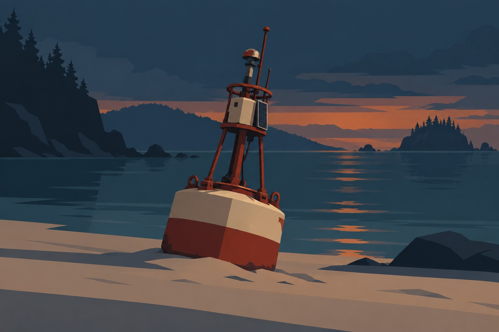
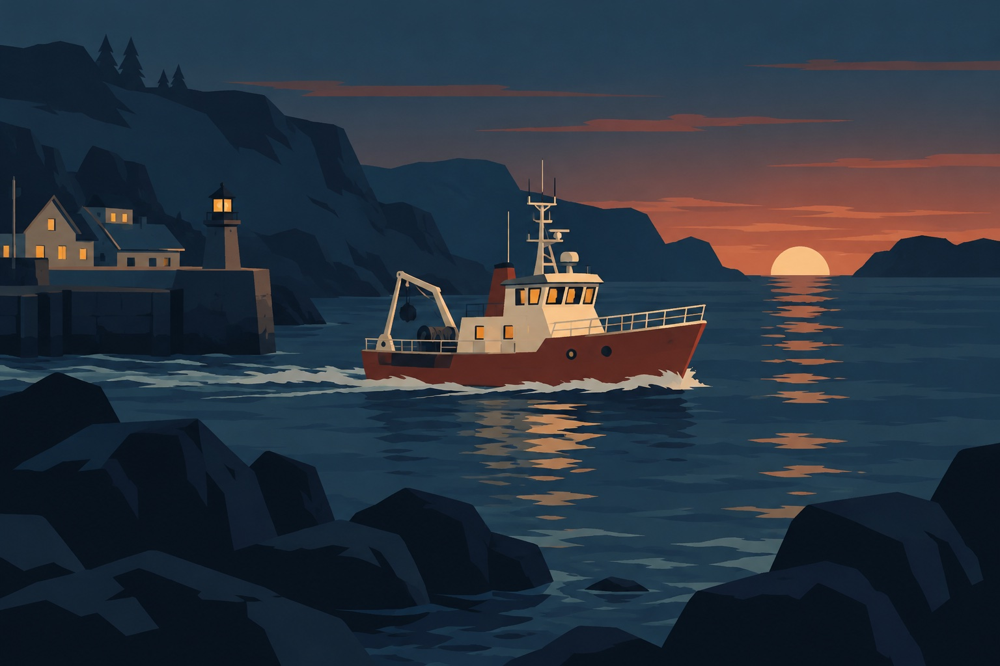
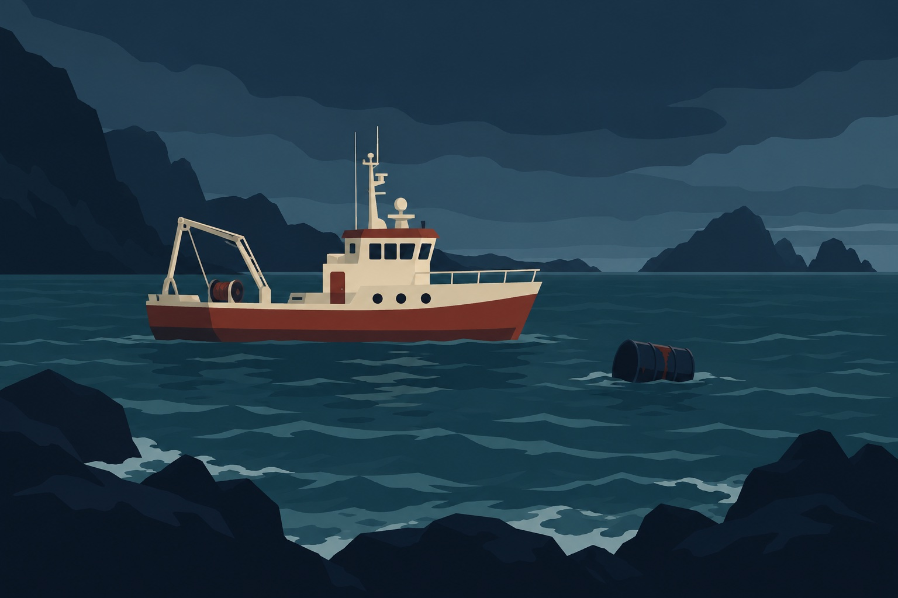
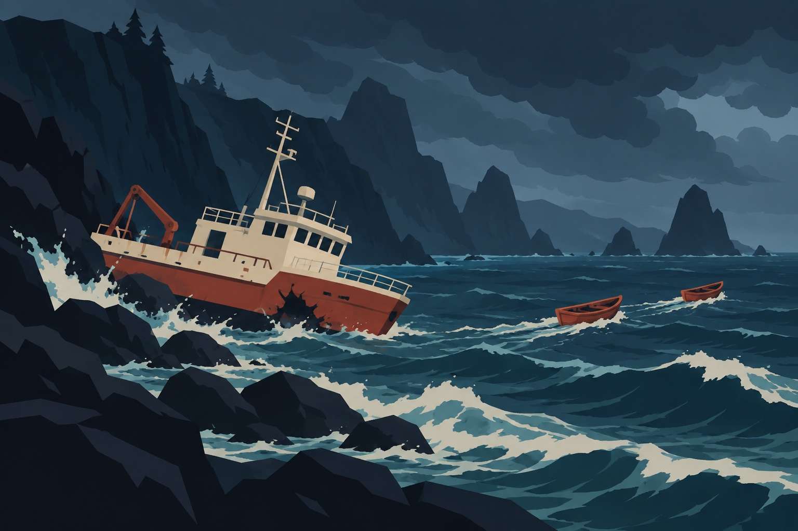

Chapter 01
The Shore
A violent storm has just passed. Along the coast, an abandoned radio begins transmitting a mysterious distress signal.
The transmission is dated ten years ago. Someone may still be waiting for help.
Distress Radio
Static fills the speakers...
Chapter 02
Shallow Water
Sunlight fades beneath the surface. Schools of fish move through the reef. One fish carries something unusual.
Look carefully at the fish.
CHAPTER 03
The Signal Buoy
An old research buoy rests beneath the surface. Its antenna is damaged, but the equipment still responds.
Research Archive

An old photograph of the research buoy.
Adjust the Antenna
The signal is too weak to decode.
CHAPTER 04
The Shipwreck
A research vessel lies abandoned on the ocean floor. Debris blocks the entrance to its cabin.
Something appears to be hidden underneath...
Locked Cabin
Enter the four-digit access code
CHAPTER 05
Inside the Vessel
Inside the cabin, you discover an abandoned research station. A logbook, audio recording, and photographs remain intact.
Research Evidence
Voyage Photographs
Arrange the photographs in chronological order.



The photographs appear to be out of order.
FINAL CHAPTER
The Truth Beneath the Sea
The researcher's final recording reveals what happened aboard the vessel.
The crew discovered evidence of illegal waste dumping. The researcher survived and hid her findings before abandoning the ship.